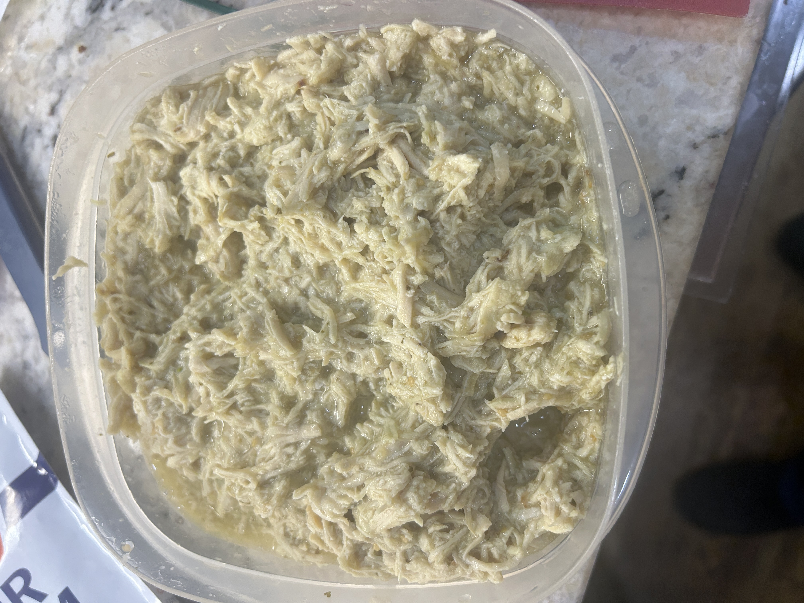

Chicken Chile Verde

A dead-simple recipe that's very tasty.
I came up with this one for my daughters. It's literally three ingredients and makes enough for several meals.
It can be made in a slow cooker, traditional stovetop, or Instant Pot. This version is stovetop, so adjust accordingly.
Ingredients:
- 2 lbs. boneless, skinless chicken breast
- 16 oz. jar Herdez Salsa Verde
- 16 oz. jar Herdez Salsa Guacamole
Directions:
- Pour salsas in a 5 quart Dutch oven or stock pot.
- Add chicken breasts, covering with the salsa mix.
- Cover and simmer on low for 2 hours.
- Allow to cool. Shred chicken and mix thoroughly.